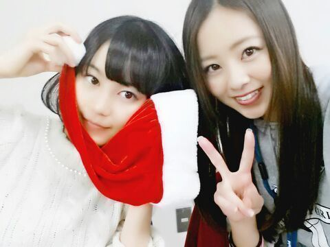

| 2013/12 16 Mon | 元祖はオムライス(^w^) Rotty ♪ |
おはよ〜(・∀・)人(・∀・)
ろってぃーだよ〜
サンタクロースのおやつ.♪
全く同じのん２本買って
２本食べた 笑
そしてそして 昨日は 個別握手会w
めっちゃ めっちゃ楽ちかったよぉぉ \(*´3`*)/
本当にありがと〜
皆といっぱい絡めて 嬉しかった.
昨日は、椅子に腰かけての握手会になったんだけど
ろってぃ−は落ち着いてできたかもしれない あは
皆とすっごく仲良くなれたきがするの*´ω`*
ろってぃ−と皆の距離が縮まったって感じ .♪
あとさっあとさっ、、
皆 ごめんwwwwwwww (*≧∀≦*)
期待をしてくださっていた方々.........
昨日は X'mas前の 握手会。 うんっ！
ろってぃ−サンタっ！ うんっ ごめん
昨日は めっちゃ私服でした。
赤のパンツに グレーのトレーナーに 茶色のニーハイブーツ.♪
これで許ちて？？

去年のろってぃ−サンタ〜 (*´ω｀*)
にしても、Rotty夢☆の皆は愉快やねっ
ファン通しが仲良しこよしやさかい
ろってぃ−は 心が暖かくなるんよ〜
だってだって 皆さっ
お揃いのサンタ帽かぶってきたり
向こうの方で Rotty夢同士がが 何か喋ってたり
するんだもん (*^^*) あはは
これからも よろしくねっ(・∀・)人(・∀・)
乃木familyの皆と もっと仲良くやりたいお〜
ぢゃあ 今日も お仕事がんばります！

えりか ろってぃ−
のし〜のし〜(*^.^*)
コメント(187)
2013/12/16 12:18